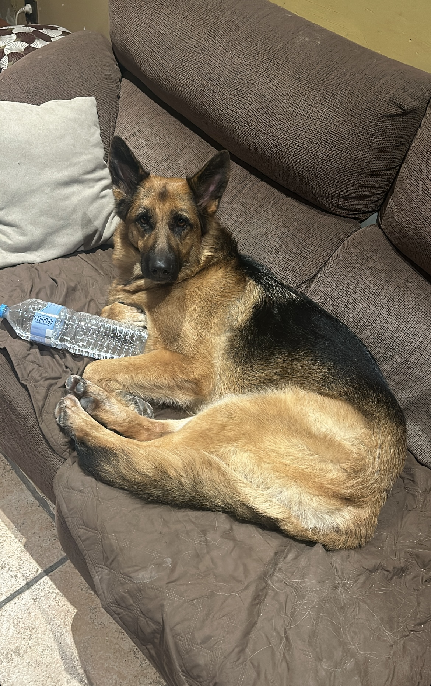
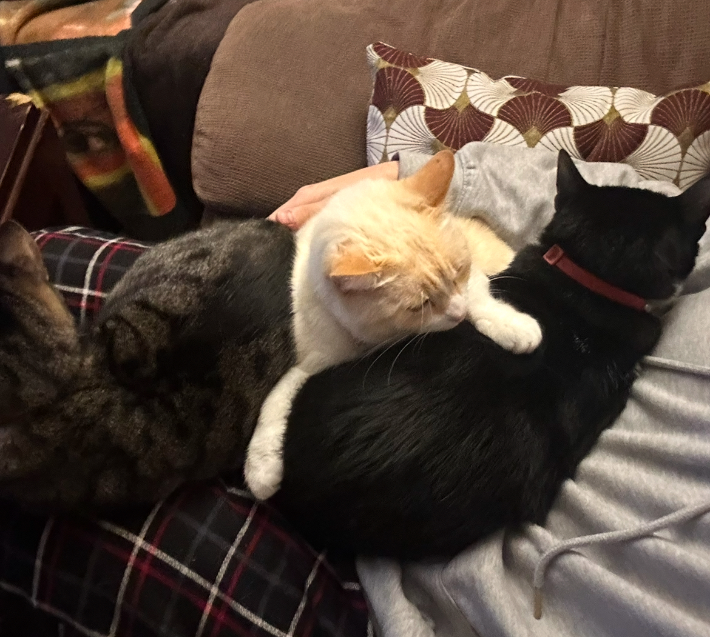
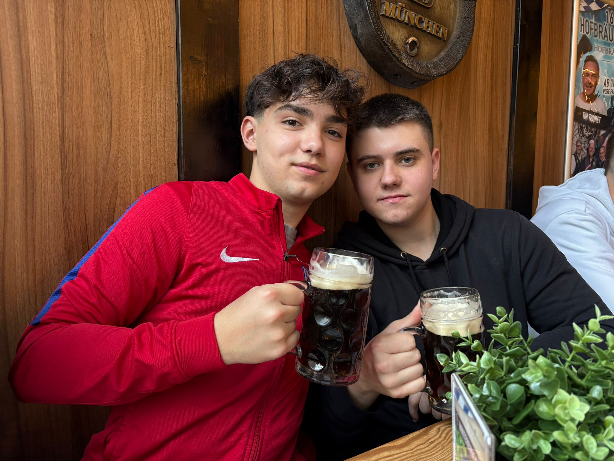
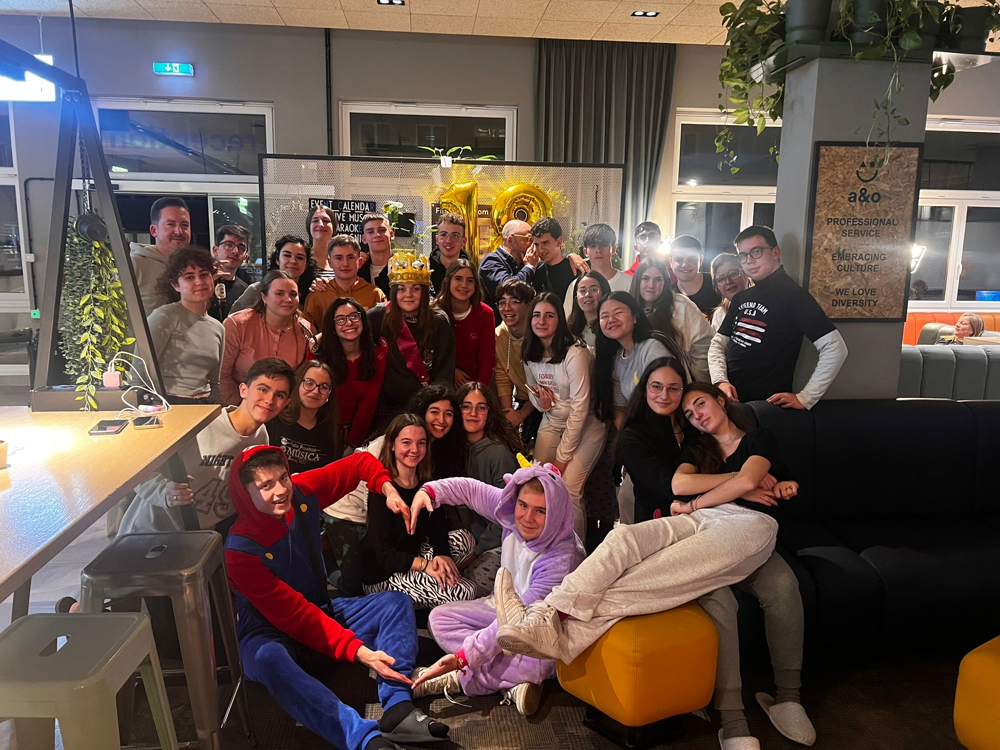
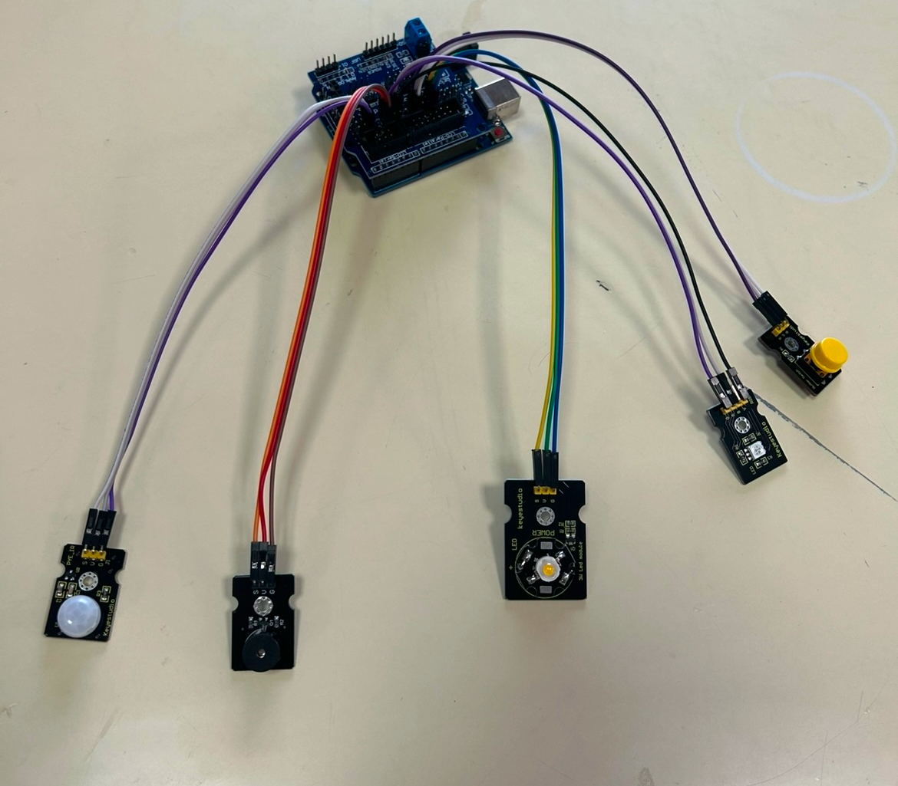

| Me presento, me llamo Daniel Ruiz tengo 17 años y vivo en Úbeda, Jaén. Estudio 2º de Bachilleratomtecnológico en el instituto IES Francisco de los Cobos. Soy una persona animada y alegre, aunque a veces un poco perezoso. |
| Mascotas | |
|  |  |
| Me gustan mucho los animales, de hecho tengo tres gatos y una perra. La perra se llama Leia, y los tres gatos Yoda (blanco y negro), Luke(marrón) y Anakin(blanco). Con esto también se puede ver que me gusta Star Wars. | |
| Amigos | Viajar |
|  |  |
| Otra de mis aficiones es salir con amigos, y más si es para echasrse una buena cerveza. | Me gusta viajar, entre los sitios que he visitado se encuentran ciudades como: Londres, Estambul, Paris o Berlín. Este último lo visité hace muy poco con el viaje de estudios del conservatorio, la imagen es de allí. |
|  | Este proyecto lo he realizado en la asignatura Programación y Computación de 2º de Bachillerato. Se trata de laa automatización del sistema de seguridad de una caja fuerte a través de una placa Arduino UNO y unos sensores. EL sistema tiene dos estados, estado seguro y alarma. En el de alarma, una luz que hay fuera se pone roja indicando que no se puede entrar y si entra alguien lo detecta un detector de mopvimientos que hace sonar una alarma. EN cambio, si se pulsa el botón cambia de estado, y en el estado seguro la luz de fuera se pone verde y si entra alguien se enciende una luz. |